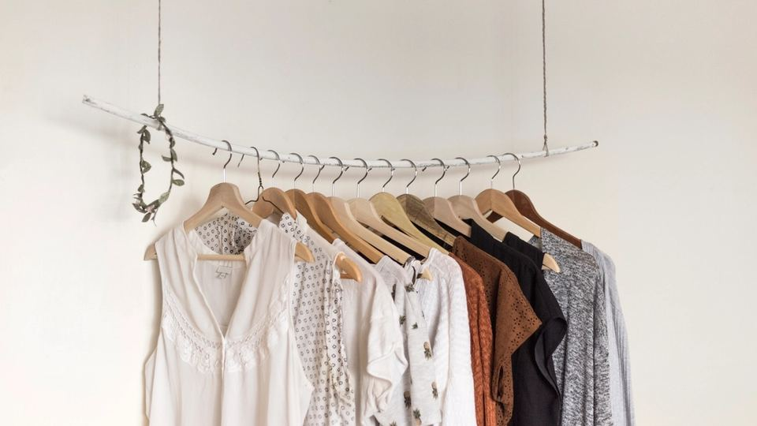

朝の支度の時間に、「今日は何を着ていこう」と迷ってしまう。買ったはずの服が、職場の雰囲気に合わなくて結局着なくなる。30代になると、仕事の立場や身につけたい印象が少しずつ変わり、仕事服選びに悩む方は多いのではないでしょうか。
仕事と家のことで忙しい毎日の中で、服を選びに出かける時間を取るのも簡単ではありません。この記事では、ファッションレンタルを仕事服に使うときの考え方と、サービスを比べるときに見ておきたい点、申し込む前の注意点を整理しました。
仕事服のファッションレンタルとは｜こんな人に向いています
ファッションレンタルは、月ごとの料金を払って、服を借りて着られるサービスです。好みや体型、着ていく場面を登録しておくと、スタイリストが選んだ服や、自分で選んだ服が自宅に届きます。着終わったら返却し、次の服と入れ替える流れが一般的です。
- 毎朝の服選びに時間がかかる人：組み合わせを考えた服が届くと、迷う時間を減らしやすい
- 買い物に出かける時間が取りにくい人：家にいながら、新しい服を試せる
- 職場に合う服が分からなくなった人：プロの目で選んだ服を参考にできる
- 服が増えて収納に困っている人：借りて返すので、クローゼットに服がたまりにくい
- 仕事の場面が変わった人：異動や復職で、これまでと違う服装が必要になった
30代の仕事服レンタルの選び方｜失敗しない4つのポイント

1. 職場の服装のルールと雰囲気を伝えられるか
仕事服で一番大切なのは、職場の雰囲気に合っていることです。スーツに近いきちんとした服が求められる職場もあれば、オフィスカジュアルで動きやすさを大切にする職場もあります。
登録のときに「どんな職場で、どんな場面で着るか」を細かく伝えられるサービスを選ぶと、届く服のずれが少なくなります。 来客や会議が多いのか、デスクワーク中心なのか、立ち仕事があるのかなども、伝えられる範囲で書いておくと安心です。
2. スタイリストが選ぶ形か、自分で選ぶ形か
ファッションレンタルには、スタイリストが服を選んで届ける形と、アプリなどで自分で服を選んで借りる形があります。サービスによっては、その両方を組み合わせられる場合もあります。
服選びの手間を減らしたいなら、スタイリストに任せる形が向いています。一方で、着たい服のイメージがはっきりしている方や、手持ちの服に足りないものだけを借りたい方には、自分で選ぶ形のほうが合うこともあります。
3. 届く枚数と、交換できる回数
1回に届く服の枚数や、1か月に何回交換できるかは、サービスやプランによって違います。週に何日出勤するのか、手持ちの服とどう組み合わせるのかを考えてから比べると、自分に合うプランが見えてきます。
出勤の日が多い方は、届く枚数が多いプランや、交換しやすいプランのほうが着回しに困りにくくなります。在宅勤務が多い方は、少ない枚数で十分なこともあります。
4. サイズの幅と、気に入った服を買い取れるか
30代になると、体型の変化や着心地を気にする方も増えてきます。自分のサイズに合う服がそろっているか、丈や身幅の希望を伝えられるかを確認しておきましょう。
また、気に入った服をそのまま買い取れるサービスもあります。何度も着たい定番の服が見つかったときに、手元に残せるかどうかも比べるポイントになります。
ポイント
迷ったときは、まず「職場の服装に合わせてもらえるか」と「自分で選びたいか、任せたいか」の2点で候補を絞ると決めやすくなります。そのうえで、出勤の日数に合う枚数のプランを選ぶと無理がありません。
おすすめのファッションレンタルを比較
仕事服として使いやすいファッションレンタルを、特徴とあわせて比べられるようにまとめました。スタイリストに任せたいのか、自分で選びたいのか、どのくらいの枚数が必要かを思い浮かべながら見てみてください。料金やプランの内容は変わることがあるため、最新の情報は各社の公式サイトでご確認ください。
おすすめサービス比較表
| サービス | 借りられるもの | 特徴 | 申込み |
|---|---|---|---|
| イチオシairCloset（エアクロ） | 洋服（プロのコーデ） | プロが選んだコーデが届く大人女性向けファッションサブスク | 料金を見る |
| 2AnotherADdress | デザイナーブランドの服 | 百貨店発のデザイナーブランド服のサブスク | 料金を見る |
| 3おしゃれコンシャス | ゲストドレス・ワンピース | 結婚式のゲストドレス・お呼ばれワンピースのレンタル | 料金を見る |
※料金・内容は各社の公式情報・広告素材の記載をもとにした目安です（2026年10月時点）。最新の料金・条件は必ず公式サイトでご確認ください。
利用するときの注意点
注意
- 汚れや傷みの扱い：日常の着用で付く小さな汚れは問題ないとするサービスが多い一方で、大きな汚れや破れは、別に費用がかかる場合があります。補償の内容を事前に読んでおきましょう
- 返却の期限と手間：返却の方法や期限を確認しておくと、忙しい時期でも慌てずにすみます。コンビニなどから返せるかどうかも見ておくと便利です
- 解約や休止の条件：繁忙期や長期の休みなど、使わない月が出ることもあります。休止できるか、解約にどんな手続きが必要かを確認しておくと安心です
- 届く服が好みと違うこともある：スタイリストが選ぶ形では、最初は好みとずれることもあります。感想を伝えることで、少しずつ合う服が届きやすくなります
注意
制服や細かい服装の決まりがある職場では、レンタルの服が合わないこともあります。申し込む前に、職場で認められている服装の範囲を確認しておきましょう。
よくある質問
仕事服を全部レンタルにしても大丈夫ですか？
すべてをレンタルにする方法もありますが、最初は手持ちの服と組み合わせて使うほうが安心です。ジャケットや靴など、毎日使う定番のものは手元に置き、トップスやワンピースなど変化をつけたいものをレンタルにする、という分け方もあります。
職場で「毎回違う服だね」と目立ちませんか？
スタイリストに「落ち着いた色で、仕事向けのデザインを」と伝えておくと、職場になじむ服が届きやすくなります。手持ちの定番の服と組み合わせれば、印象が大きく変わりすぎることもありません。
クリーニングは自分でしないといけませんか？
多くのサービスでは、着たあとの服をそのまま返却でき、クリーニングはサービス側で行う仕組みになっています。ただし扱いはサービスごとに違うため、利用の前に確認しておきましょう。
料金や交換の回数は、どこで確認すればいいですか？
月ごとの料金、届く枚数、交換の回数、送料の扱いなどは、プランの変更で変わることがあります。最新の条件は各社の公式サイトで確認し、自分の出勤の日数に合うかどうかを比べてみてください。
まとめ
この記事のポイント
- ファッションレンタルは、仕事服選びの手間や、服が増えすぎる悩みを軽くする方法の一つ
- まずは職場の服装のルールと、着ていく場面を伝えられるかを確認する
- スタイリストに任せるか自分で選ぶか、届く枚数や交換の回数、サイズの幅を比べる
- 汚れの補償、返却の方法、休止や解約の条件は、申し込み前に読んでおく
仕事服のことで毎朝迷う時間が減ると、気持ちにも少し余裕が生まれます。気になるサービスが見つかったら、公式サイトで内容を確かめて、自分の働き方に合うかどうか、ゆっくり比べてみてください。